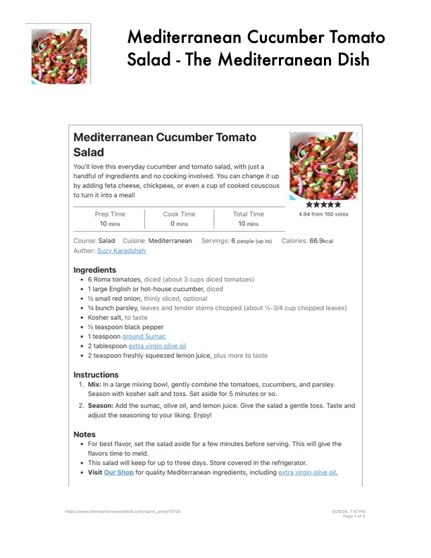

Mediterranean Cucumber Tomato

Original cookbook page 555
Ingredients
- 6 Roma tomatoes, diced (about 3 cups diced tomatoes)
- * 1large English or hot-house cucumber, diced
- * % small red onion, thinly sliced, optional
- % bunch parsley, leaves and tender stems chopped (about %-3/4 cup chop}
- * Kosher salt, to taste
- * % teaspoon black pepper
- 1teaspoon ground Sumac
- 2 tablespoon extra virgin olive oil
- 2 teaspoon freshly squeezed lemon juice, plus more to taste
Instructions
- Mix: In a large mixing bowl, gently combine the tomatoes, cucumbers, and f Season with kosher salt and toss. Set aside for 5 minutes or so.
- Season: Add the sumac, olive oil, and lemon juice. Give the salad a gentle tc adjust the seasoning to your liking. Enjoy! Notes flavors time to meld. « This salad will keep for up to three days. Store covered in the refrigerator. themediterrane: com/wprm_print/10728
Recipe #555 from collection